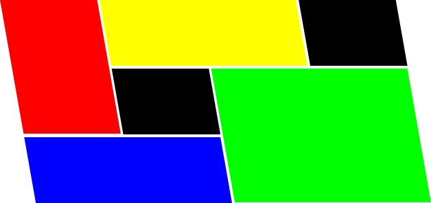
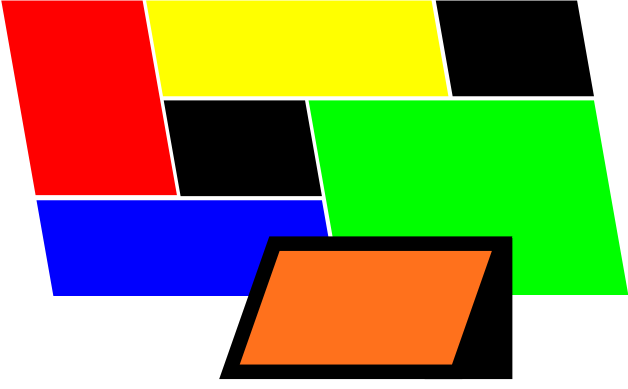
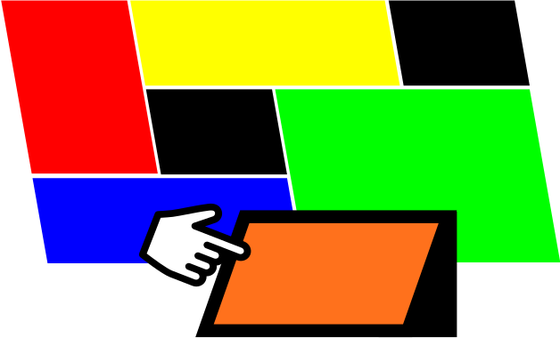

Easily format visual content for your display
Your display may have a weird aspect ratio, or be composed of multiple displays, or have a bezel grid running through it. Glider will allow you to format your content to accommodate your display's particularities.
Make things change over time
Set up content to appear, disappear, and change over time, in arbitrarily complicated (or simple!) sequences.

Distribute content over many displays
You want your display wall to show one thing, a separate monitor to show something else, and your viewers' smartphone something else again. Glider will allow you to tag content for different displays, creating a coordinated, distributed display environment.

Control one display device from another
Control a display wall from a smartphone, let the display wall change what's on an audience's mobile devices, or any one of a number of configurations. Glider will have message-passing between display devices built in.